OpenDRIVEの道路に関するビデオへようこそ my name is Nico and in this video I will explain how roads work in open drives. To build roads in open drive, you will always need the reference line as nearly all of the features are attached to this reference line. And I made a video just on the reference line. So make sure to watch this video as you will need the knowledge from this video for the road definitions.
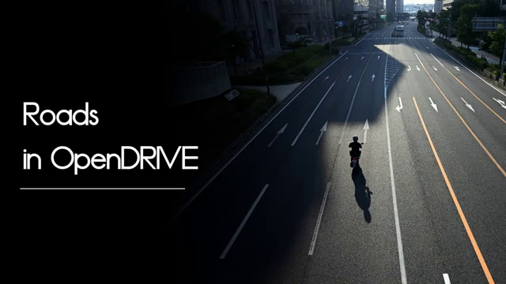
本日はOpenDRIVEで道路を定義する方法について学びます and how you can properly link roads together to form a road network. We will also have a look at the different attributes opendrive letsch define for roads. What we will not look at our lanes for today, but there will be a future video just for that. So let's start defining our roads.
This is the high level XML structure of Open Drive. Check out my video on what is open Drive, where I'm explaining what each of the element in the structure is for link in the video, video description, of course. So the row definition is directly under the header and you will need to create one row entry for each row you define in your opendrive. Depending on your use case, that will be quite a few roads, So each road has its own reference line, which is located in the plan view element and as we learned before, the reference line is the one of the key elements for each road. So as you can see here, there are quite a few elements within the road definition, and I will explain those in detail later in this tutorial series.
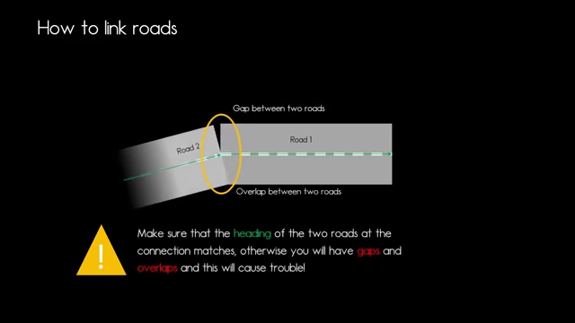
In this video, we will focus on 道路のリンクと道路属性. 単純な道路を定義し、右側通行を指定します and that is stated by the rule attribute r HT. Then we will specify the length of the road to 100 m.
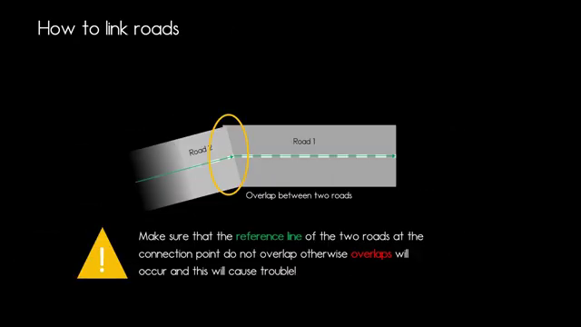
We will give the road the ID 1 and we will indicate that the road is not part of a junction by setting the junction attribute to -1. Then we will have the link elements, which we will not go into further detail right now, but later on, which indicates what are the predecessors and successor of of the road. And then we can state what type of road do we have and until what s position of that road, that type is valid. If we want to change the type of the road in between, we just add another type element, that entry with a new type at that as position. And then we have the plan view. And I made a video just on that and all the other elements where further videos will follow in the future.
And that is our row definition, relational driving direction, and the direction of the reference line have to each other. And the answer is very simple, none whatsoever. So if we specify right hand traffic, then our car will drive on the right hand side of the road, no matter what the reference line says. If we turn the reference line around, the car will still be on the right hand side of the road and only if we specify left hand traffic, then we can state, okay, the car is going to drive on the other side of the road. So you can see that the direction of the reference line has nothing to do with the driving direction.
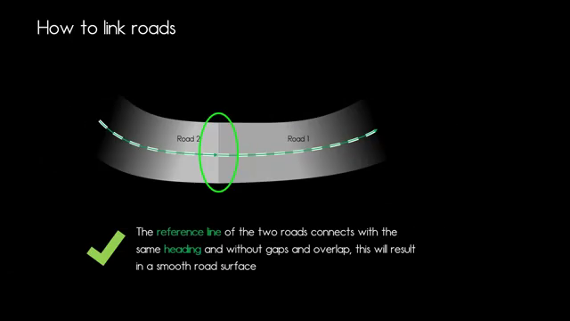
Now let's have a look at our link element because we now have one road and now we want to link it with other roads. So let's say we want to have the row 2 and row 3 as predecessor and successes or elements. And then we will state those in the link element of the road definition. So road one knows my predecessor is road with ID 2, and my successor is road with ID three, linked roads with roads. But at some point in your road network, your road will link with the junction, and junctions in that matter are viewed as one element within open drive. So we have the junction of ID 2, and that is our predecessor to our road, obviously, of element type junction. And the successor, as before, is still road element 3.
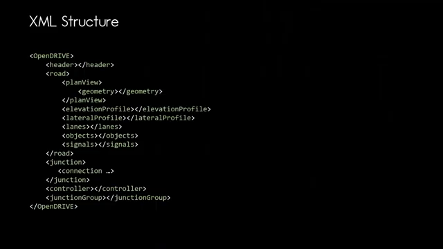
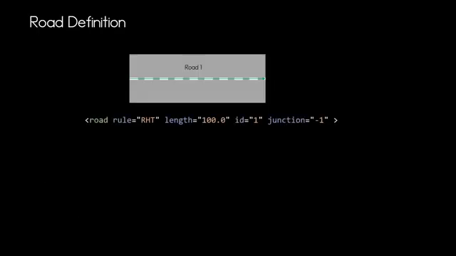
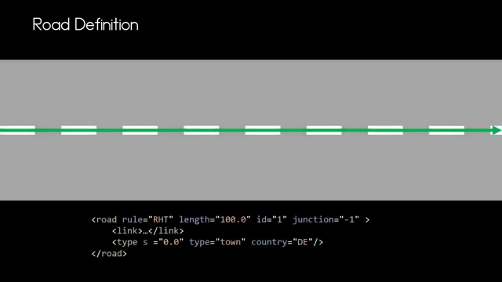
Let's jump back to the previous example where row 2 is the predecessor of road 1. So how do we need to link those roads together to form a smooth surface? And there are a few things you need to consider, and that is very important that the reference line of the two roads connect with the same heading at that connection point, because otherwise there will be gaps and overlaps in your road surface.
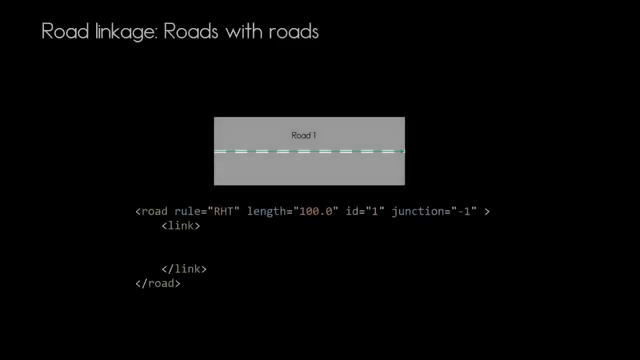
And if you consider that the heading at that connection point is the same, then you will have a smooth road surface. So let's see, how would those mistakes look like. So for example, if the reference line doesn't connect properly at that connection point, you will have a gap between those two roads. And that is obviously quite bad.
So always make sure that that reference line is connected properly. If the heading is not the same, you will have an overlap at the bottom and the gap at the top, and that won't be good for your vehicle dynamics in your simulation. And if the reference line overlaps and is without the same heading, then you will have overlaps again. And if you think about that, one of the roads that may be tilted or has an elevation to it, that won't be good for your vehicle dynamics as well. So if you want to have a curve or designer curve, always make sure that at that connection point, the heading is the same and that you use the proper reference line elements to form your smooth road and your curve.
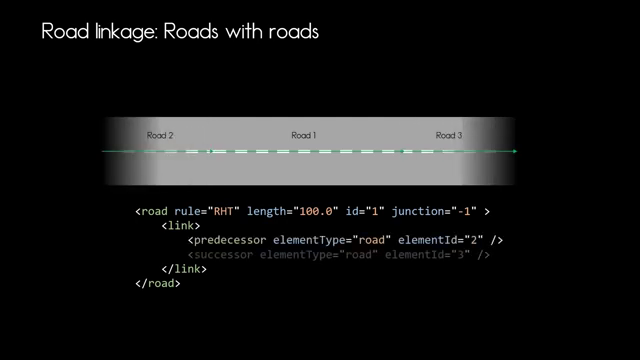
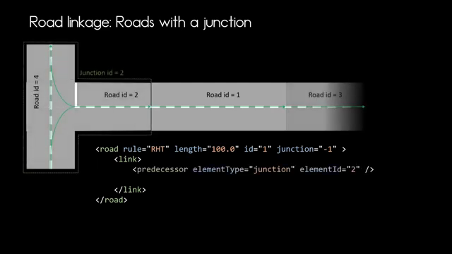
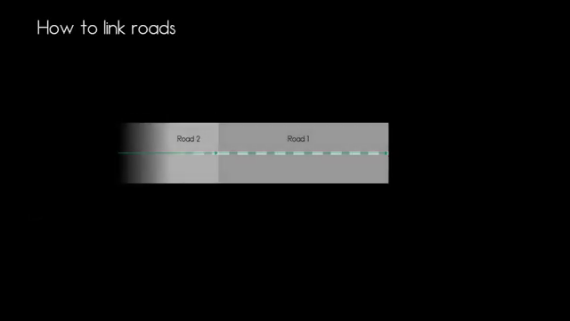
Now you have a basic idea on how to define roads and how to link roads in open drive. What we didn't cover today was defining two lanes. And in our examples here, we had two lanes. And that was quite simple. And I will make a video on how to specify lanes in a future video. So thank you very much for watching. I hope you enjoyed the video and see you the next time.
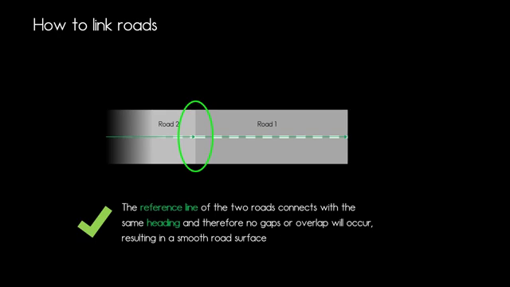